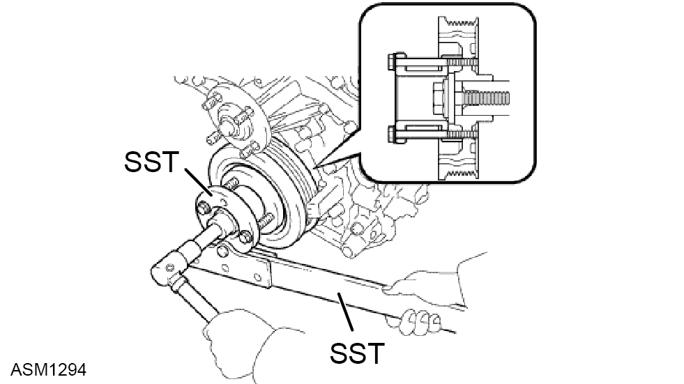
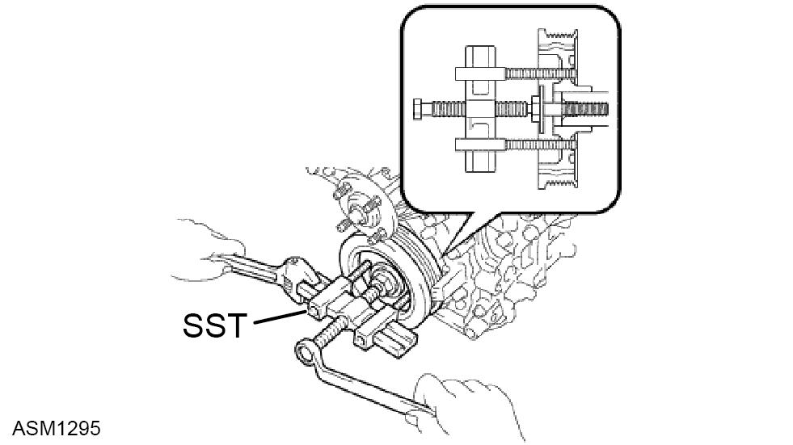

Pulley - Crankshaft - V6
Print
Operation Code: 41.03.05-02
Removal
- Remove engine assembly. Refer to procedure.

- Use SST 09213-70011 and SST 09330-00021 to remove crankshaft pulley bolt. Torque 250 Nm.

- Use SST 09950-50013 to remove crankshaft pulley.
Installation
- Installation is the reverse of removal procedure except for the following:
- Align pulley set key with groove of crankshaft pulley.